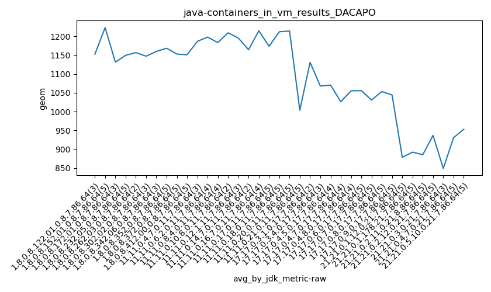
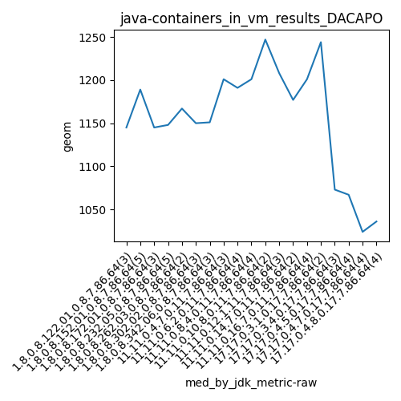
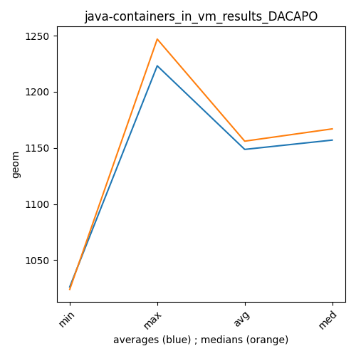

java- DACAPO
Context at bottom
/home/jvanek/git/benchmarks-in-nested-virtualisation-toolchain/final_results/containers_in_vm_results/containers_in_vm_results_J2DBENCH
java-
DACAPO
/home/jvanek/git/benchmarks-in-nested-virtualisation-toolchain/final_results/containers_in_vm_results/containers_in_vm_results_RADARGUNs3
java-
DACAPO
/home/jvanek/git/benchmarks-in-nested-virtualisation-toolchain/final_results/containers_in_vm_results/containers_in_vm_results_DACAPO
java-
DACAPO
containers_in_vm_results_DACAPO
final score
Expected number of java- JDKs: 19
1st avgmed_alljdks_metric:
/home/jvanek/git/benchmarks-in-nested-virtualisation-toolchain/final_results/result_processing.py /home/jvanek/git/benchmarks-in-nested-virtualisation-toolchain/final_results/containers_in_vm_results/containers_in_vm_results_DACAPO geom False
values: [1145, 1173, 1140, 1189, 1187, 1189, 1204, 1347, 1211, 1145, 1039, 1134, 1181, 1158, 1148, 1127, 1147, 1167, 1177, 1115, 1150, 1151, 1199, 1130, 1209, 1201, 1150, 1191, 1240, 1190, 1172, 1201, 1128, 1223, 1182, 1247, 1172, 1223, 1156, 1208, 1177, 1152, 1094, 1179, 1201, 1386, 1244, 1018, 1093, 1073, 1038, 1096, 1067, 1053, 1066, 1024, 1013, 1049, 1019, 1036, 1027, 1149, 1009]

Expected number of iterations: 5
final number of values: 63 out of 95
Pass rate: 66.3%
values: (1009, 1386, 1147.7619047619048, 1152)

** accuracy from all jdks and runs
more is better
MIN: 1009
MAX: 1386
AVG: 1147.7619047619048
MED: 1152
Relative differences 1:
MIN-MAX: 27.0 %
MIN-AVG: 12.0 %
MIN-MED: 12.0 %
MAX-MIN: -37.0 %
MAX-AVG: -21.0 %
MAX-MED: -20.0 %
AVG-MED: 0.0 %
stored to java-.properties. sort | uniq that!
2nd avgmed_by_jdk_metric:
values: [1152.6666666666667, 1223.2, 1131.6666666666667, 1149.6, 1157.0, 1147.3333333333333, 1160.0, 1186.6666666666667, 1198.25, 1183.5, 1209.5, 1195.6666666666667, 1164.5, 1215.0, 1131.0, 1068.0, 1070.5, 1026.25, 1055.25]

values: [1145, 1189, 1145, 1148, 1167, 1150, 1151, 1201, 1191, 1201, 1247, 1208, 1177, 1201, 1244, 1073, 1067, 1024, 1036]

values: (1026.25, 1223.2, 1148.7131578947367, 1157.0)
values: (1024, 1247, 1156.0526315789473, 1167)

** accuracy from all jdks where runs were avged
more is better
MIN: 1026.25
MAX: 1223.2
AVG: 1148.7131578947367
MED: 1157.0
Relative differences 1:
MIN-MAX: 16.0 %
MIN-AVG: 11.0 %
MIN-MED: 11.0 %
MAX-MIN: -19.0 %
MAX-AVG: -6.0 %
MAX-MED: -6.0 %
AVG-MED: 1.0 %
stored to java-.properties. sort | uniq that!
** accuracy from all jdks where runs were medianed
more is better
MIN: 1024
MAX: 1247
AVG: 1156.0526315789473
MED: 1167
Relative differences 1:
MIN-MAX: 18.0 %
MIN-AVG: 11.0 %
MIN-MED: 12.0 %
MAX-MIN: -22.0 %
MAX-AVG: -8.0 %
MAX-MED: -7.0 %
AVG-MED: 1.0 %
stored to java-.properties. sort | uniq that!
/home/jvanek/git/benchmarks-in-nested-virtualisation-toolchain/final_results/containers_in_vm_results/containers_in_vm_results_RADARGUNs1
java-
DACAPO
/home/jvanek/git/benchmarks-in-nested-virtualisation-toolchain/final_results/containers_in_vm_results/containers_in_vm_results_SPECJBB
java-
DACAPO
/home/jvanek/git/benchmarks-in-nested-virtualisation-toolchain/final_results/containers_in_vm_results/containers_in_vm_results_JMH
java-
DACAPO
pass rates:
containers_in_vm_results_DACAPO=66.3%
Context:
- containers_in_vm_results
- DACAPO